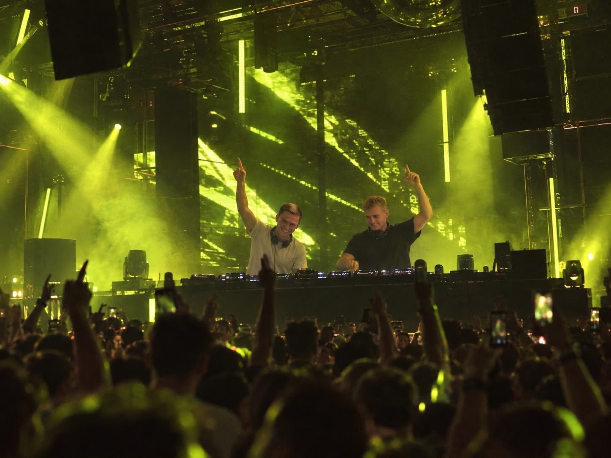

01↗
HOUSE / CLUB
After Dark Sessions
Groovende Basslines und treibende Beats für den Club.
Stehle & Stadler. Club, House, Techno und Malle — unser gemeinsamer Nenner ist die Energie auf dem Floor.
Eure Nacht mit S&S ↗Vom ersten Groove bis zum letzten Drop.
House, Techno und Party – passend zu eurer Bühne.
Groovende Basslines und treibende Beats für den Club.
Druckvolle Kicks und hypnotische Energie für die Peak Time.
Bekannte Hooks, Hände nach oben und gemeinsam feiern.

Was als Schnapsidee während des Studiums in einer kleinen Kellerbar begann, ist heute Stehle & Stadler – ein professionelles DJ-Duo.
Aus gemeinsamen Abenden hinter den Decks wurde die Leidenschaft, die uns bis heute verbindet: Musik auflegen, Menschen zusammenbringen und den Moment spüren, in dem die Tanzfläche mitgeht.
Als S&S bringen wir diese Energie in Clubs und auf Festivals. House, Techno oder Malle – wir stimmen unseren Sound auf die Bühne und das Publikum ab.
Live ist der beste Ort,
um uns kennenzulernen.
Neue Termine geben wir hier bekannt.
S&S für euer Event anfragen ↗